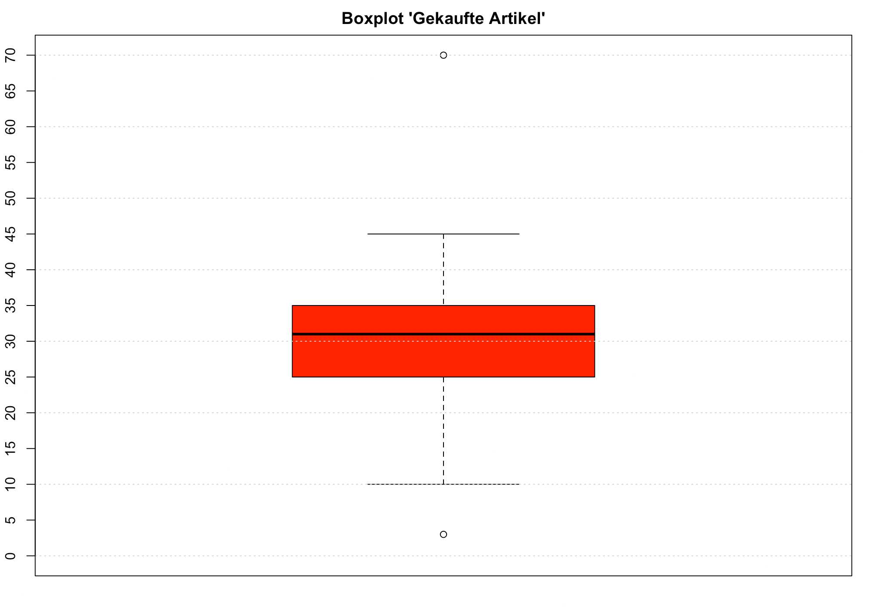
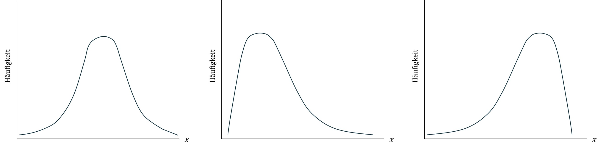

Übung 3
Hinweis: Die Formelsammlung zu dieser Übung finden Sie auf OLAT oder hier. Benützen Sie sie, wann immer Sie möchten.
Aufgabe 3.1
Geben Sie zu jedem Skalenniveau alle Berechnung(en) der zentralen Tendenz (Modalwert, Median, Mittelwert) an, welche grundsätzlich erlaubt sind:
- Nominalskala
- Ordinalskala
- Metrische Skala
- Verhältnisskala
- Modalwert
- Modalwert, Median
- Modalwert, Median, Mittelwert
- Modalwert, Median, Mittelwert
Aufgabe 3.2
Um zu entscheiden, welches Mass für die zentrale Tendenz geeignet ist, müssen Sie zunächst bestimmen, …
- welche Diagramme passenderweise erstellt werden können.
- wie gross die Anzahl Messwerte (\(n=\) …) ist, die vorkommen.
- welches Skalenniveau verwendet wurde und welche Form die Verteilung hat.
- mit welcher Erhebungsmethode die Messwerte gemessen wurde.
Wählen Sie die korrekte Antwort aus.
Korrekt ist: c.
Aufgabe 3.3
Mit 10 Personen wurde ein IQ-Test durchgeführt. In der folgenden Tabelle sind die Versuchspersonennummern (ID) und deren Testwerte notiert.
| ID | Testwert |
|---|---|
| 01 | 102 |
| 02 | 98 |
| 03 | 112 |
| 04 | 128 |
| 05 | 79 |
| 06 | 111 |
| 07 | 89 |
| 08 | 81 |
| 09 | 92 |
| 10 | 108 |
- Berechnen Sie von Hand oder mit einem Taschenrechner den Mittelwert.
\(102+98+112+128+79+111+89+81+92+108=1000\)
\(1000:10=100\)
\(\bar{x} = 100\)
- Welche beiden Masse wurden hier berechnet? Was sagt der Wert \(14.52\) aus?
\(s^2_x=\frac{(102-10)^2+(98-10)^2+(112-10)^2+(128-10)^2+(79-10)^2+(111-10)^2+(89-10)^2+(81-10)^2+(92-10)^2+(108-10)^2}{10}=210.8\)
\(s_x=\sqrt{210.8}=14.52\)
Hier werden die Varianz \(s^2_x\) und die Standardabweichung (SD) \(s_x\) berechnet. Die Standardabweichung beträgt \(14.52\). Die Mehrheit der Messwerte liegen zwischen - 1 SD und + 1 SD um den Mittelwert herum. In unseren Daten liegen die Messwert also mehrheitlich zwischen \(85.48\) und \(114.52\). Durch dieses Mass erhalten wir Informationen, wie die Daten um den Mittelwert “streuen”.
- Geben Sie den Streubereich und den Range an.
Streubereich (Wertebereich, in dem alle beobachteten Werte liegen):
\(SB=[79;128]\)
Range (Variationsbreite):
\(v=128-79=49\)
Aufgabe 3.4
Hier finden Sie die wöchentliche sportliche Aktivität (in Stunden) der elf Spielerinnen des Fussballteams FC Mediana.
| ID | h |
|---|---|
| 01 | 3 |
| 02 | 12 |
| 03 | 1 |
| 04 | 2 |
| 05 | 20 |
| 06 | 8 |
| 07 | 10 |
| 08 | 13 |
| 09 | 9 |
| 10 | 3 |
| 11 | 7 |
- Berechnen Sie die durchschnittliche wöchentliche Aktivität der Spielerinnen in Stunden.
\[\bar{x}=\frac{3+12+1+2+20+8+10+13+9+3+7}{11}=\frac{88}{11}=8\]
- Berechnen Sie die Varianz und die Standardabweichung. Runden Sie, wo nötig, auf zwei Stellen nach dem Komma.
| ID | h | \(x_i-\bar{x}\) | \((x_i-\bar{x})^2\) |
|---|---|---|---|
| 01 | 3 | -5 | 25 |
| 02 | 12 | 4 | 16 |
| 03 | 1 | -7 | 49 |
| 04 | 2 | -6 | 36 |
| 05 | 20 | 12 | 144 |
| 06 | 8 | 0 | 0 |
| 07 | 10 | 2 | 4 |
| 08 | 13 | 5 | 25 |
| 09 | 9 | 1 | 1 |
| 10 | 3 | -5 | 25 |
| 11 | 7 | -1 | 1 |
| \(\sum\) | 88 | 0 | 326 |
Für die Varianz werden zuerst die Abweichungen vom Mittelwert notiert und diese dann quadriert. Nun wird die Quadratsumme \(326\) durch die Anzahl Messwerte geteilt.
\(s_x^2=\frac{326}{11}=29.64\)
Für die Standardabweichung wird nun die Wurzel aus der Varianz berechnet.
\(s_x=\sqrt{29.64}=5.44\)
Die Standardabweichung der wöchentlichen Aktivität liegt bei \(5.44\) Stunden. Das Mass gibt Auskunft darüber, wie stark die gemessenen Werte vom Mittelwert abweichen. Bei annähernd normalverteilten Daten liegen etwa \(68\)% aller Daten innerhalb einer Standardabweichung über und unter dem Mittelwert.
- Bestimmen Sie den Median.
Der Median liegt bei \(Md=8\).
- Geben Sie den Streubereich und den Range (Variationsbreite) an.
\(SB=[1;20]\)
\(v=20-1=19\)
- Berechnen Sie \(Q_1\), \(Q_3\) und den Interquartilsabstand (\(IQR\)).
\(Q_1=3\)
\(Q_3=12\)
\(IQR=9\)
Aufgabe 3.5
Nehmen Sie nochmals die wöchentliche sportliche Aktivität der Spielerinnen des FC Mediana. Nun fällt leider Spielerin Nr. 05 verletzungsbedingt aus und wird durch eine neue Spielerin Nr. 12 ersetzt. Die neue Spielerin macht pro Woche 50 Stunden Sport.
Bestimmen Sie erneut den Mittelwert und den Median. Welche typischen Eigenschaften der beiden Lagemasse zeigen sich hierbei?
\(\overline{x}=\frac{118}{11}=10.73\)
\(Md=8\)
Der Mittelwert wird durch den Ausreisser nach oben verschoben, wohingegen der Median unverändert bleibt. Da sich der Mittelwert um mehr als 2 Stunden nach oben verschiebt, wäre es sinnvoll hier den Median zu berichten, da der Mittelwert die schiefe Verteilung nicht gut abbildet.
Aufgabe 3.6
In einer Untersuchung zu Sucht und Konsumverhalten von Jugendlichen wurde bei 12 Jugendlichen die Anzahl gekaufter Genuss- und Freizeitartikel pro Monat erhoben.
Eingekaufte Artikel: 3, 10, 25, 26, 29, 30, 32, 35, 35, 38, 45, 70
Stellen Sie die Daten mit einem Boxplot grafisch dar. Gehen Sie wie folgt vor:
Bestimmen Sie den Median.
Bestimmen Sie \(Q_1\), \(Q_3\) und \(IQR\).
Berechnen Sie die Werte für die beiden Whiskers des Boxplots (\(Q_1 - 1.5\cdot IQR\) und \(Q_3 + 1.5\cdot IQR\)).
Zeichnen Sie nun mit den entsprechenden Werten einen Boxplot.
\(Md=31\)
\(Q_1=25\)
\(Q_3=35\)
\(IQR=10\)
Whisker unten: \(Q_1-1.5\cdot IQR=25-1.5\cdot10=10\)
Whisker oben: \(Q_3+1.5\cdot IQR=35+1.5\cdot10=50\)

Aufgabe 3.7
In der Vorlesung wurden verschiedene Verteilungsformen besprochen. Skizzieren Sie die folgenden Formen von Hand:
- Normalverteilung
- rechtsschiefe unimodale Verteilung
- linksschiefe unimodale Verteilung

Aufgabe 3.8
Zwei Personen lösen einen unterschiedlichen Test zu mathematischen Fähigkeiten. Person A löst einen Test ALPHA und Person B einen Test BETA. Beide Tests wurden an einer grossen Stichprobe getestet und validiert.
- ALPHA hat einen Mittelwert von \(\bar x = 30\) und eine Standardabweichung von \(s_x = 10\).
- BETA hat einen Mittelwert von \(\bar x = 100\) und eine Standardabweichung von \(s_x = 25\).
- Person A hat einen Testwert von \(35\) und Person B einen Testwert von \(112\) erreicht.
Vergleichen Sie die beiden Testwerte und geben Sie an, welche Aussage korrekt ist.
- Person A hat einen leicht höheren Wert in mathematischen Fähigkeiten.
- Person B hat einen leicht höheren Wert in mathematischen Fähigkeiten.
- Person A hat einen deutlich höheren Wert in mathematischen Fähigkeiten.
- Person B hat einen deutlich höheren Wert in mathematischen Fähigkeiten.
- Beide Personen haben denselben Wert in mathematischen Fähigkeiten.
- Darüber können wir keine Aussage machen, da wir die Verteilung nicht kennen.
Lösung: a.
Die beiden Testwerte können z-standardisiert werden, so dass sie verglichen werden können. Da wir bei ALPHA und BETA den Mittelwert und die Standardabweichung kennen, ist dies mit folgender Formel möglich.
\[z_m= \frac{x_m-\bar{x}}{s_X}\]
Person A: \((35–30)/10 = 0.50\)
Person B: \((112–100)/25 = 0.48\)
Person A hat einen leicht höheren z-Wert. Dieser ist jedoch lediglich \(0.02\) Standardabweichungen höher, womit der Unterschied klein ist und inhaltlich kaum oder nicht relevant. Person A und Person B liegen beide etwa eine halbe Standardabweichung über dem Mittelwert.
Aufgabe 3.9
Standardisieren Sie diese Messwerte mit Hilfe der z-Transformation:
\(x_1=0\), \(x_2=1\), \(x_3=2\), \(x_4=2\), \(x_5=5\)
Berechnen Sie zuerst Mittelwert und Standardabweichung. Wenn Sie diese kennen, können Sie die Formel zur z-Transformation nehmen und die Werte umrechnen.
Mittelwert: \(\bar{x}=2\)
Standardabweichung: Zuerst berechnen wir die Differenz jedes Wertes zum Mittelwert, quadrieren die Werte und summieren sie auf. Dann teilen wir die Summe durch die Anzahl Messwerte. Das ergibt die Varianz. Anschliessend ziehen wir die Wurzel daraus.
\((0-2)^2+(1-2)^2+(2-2)^2+(2-2)^2+(5-2)^2=4+1+0+0+9=14\)
\(\frac{14}{5}=2.8\)
\(\sqrt{2.8}=1.67\)
Nun können die Werte transformiert werden.
Beispiel für \(x_1\):
\(z_1=\frac{0-2}{1.67}=-1.20\)
In z-Werte transformiert lautet die Messwertreihe also {\({–1.20; –0.60; 0; 0; 1.80}\)}.
Hinweis: Zur Vereinfachung wurden die Werte jeweils auf zwei Stellen nach dem Komma gerundet.
Well done! Die Übungen für diese Woche sind geschafft.
Reuse
Citation
@online{senn2024,
author = {Senn, Mirjam and Wyssen, Gerda},
title = {Übung 3},
date = {2024-09-30},
url = {https://psylu.github.io/statistik1-hs24/pages/exercises/exercise_03.html},
langid = {en}
}